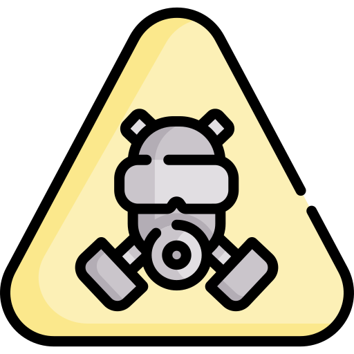
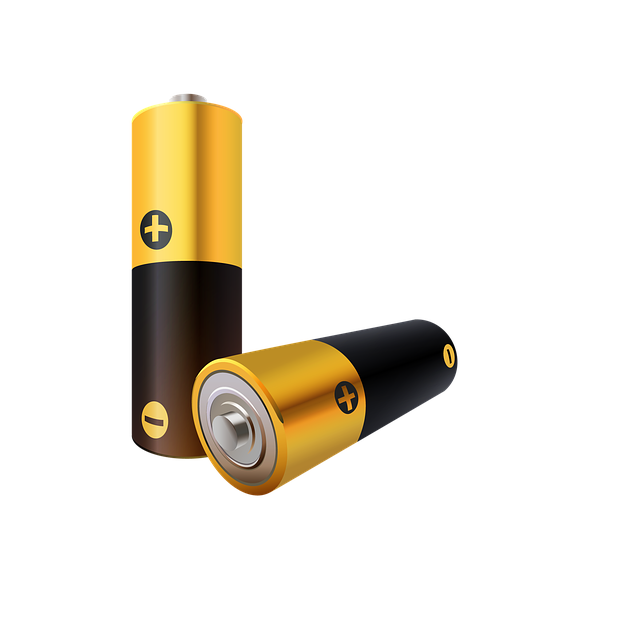
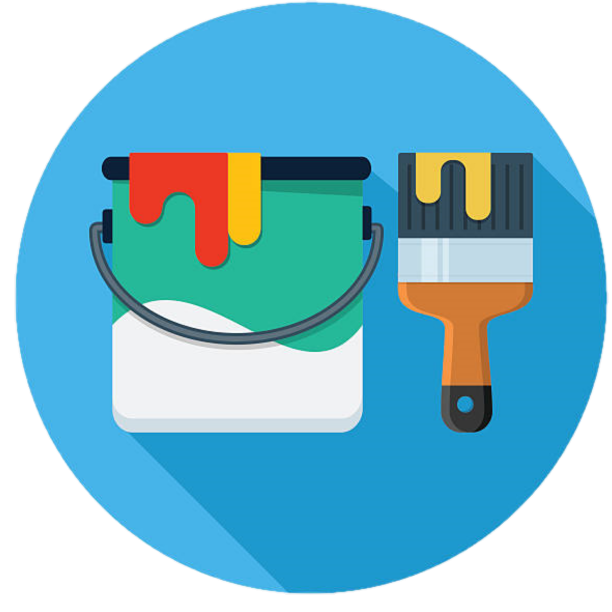
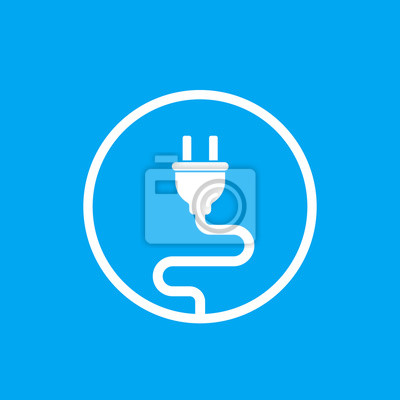
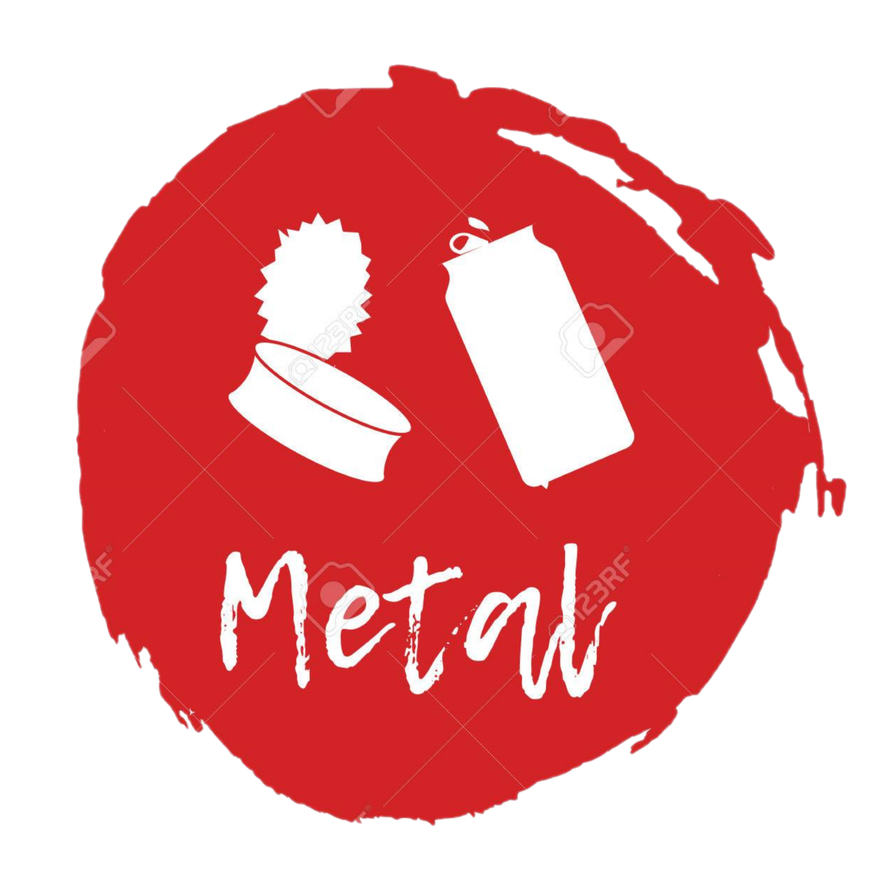
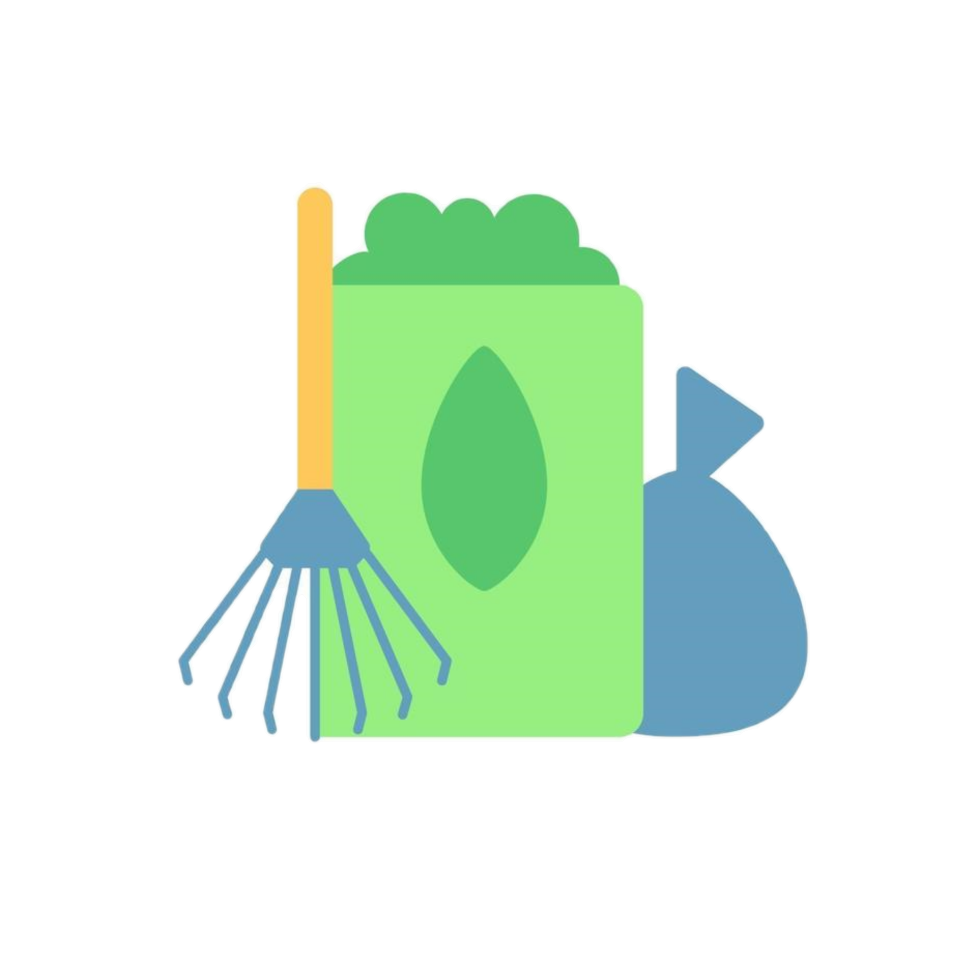

Paramètres
Déchets Toxiques

L'amiante
Ne manipulez pas les déchets
d’amiante sans précaution...

Les piles
Les piles sont reprises par Greenium. Elles sont triées par catégorie
et traitées en fonction de leur
composition chimique...

Des peintures et des vernis
Les déchets des ménages à caractère
dangereux sont triés en 4 catégories...
Encombrants

Appareils électroniques
Un électro est un appareil muni d’un
câble électrique, d’une fiche ou qui
fonctionne sur batterie ou piles...

Métaux
Les métaux
et matériaux de valeur sont retirés
et réintégrés en tant que
matières premières dans
l’industrie...

Déchets organiques
Vos déchets organiques sont
biométhanisés et transformés en
compost...
 Bois
Bois
Le bois est valorisé par nos partenaires
comme combustible dans
une unité de cogénération
(production d’électricité
et de chaleur)...